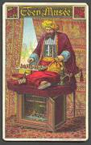

Supier historie szachowe i inne! |
||
| NIE JA TO W MYŚLIŁEM aby zobaczyć orginalne źrudło kliknij TUTAJ |
Dr House (ang. House; House, M.D.)Gra zwana szachami powstała w trzecim ćwierćwieczu VI wieku naszej ery. Taką datę podaje znany angielski historyk H.J.R. Murray w dziele History of chess. Kolebką szachów są Indie. Stamtąd dotarły one do Persji, gdzie w krótkim czasie zyskały sobie wielu zwolenników. Po podbiciu Persji przez Arabów szachy rozprzestrzeniły się na inne kraje. Gra w szachy została wzbogacona o nowe sposoby rozgrywania partii, przede wszystkim przez arabskich entuzjastów tej gry. Po podbiciu Persji przez Arabów szachy rozprzestrzeniły się na inne kraje. Gra w szachy została wzbogacona o nowe sposoby rozgrywania partii, przede wszystkim przez arabskich entuzjastów tej gry. Na podstawie wzmianek w literaturze przypuszcza się, że szachy dotarły do Polski w XII wieku, za panowania Bolesława Krzywoustego. Umiejętność gry w szachy uznawana była za zaletę i zyskała sobie wysoką rangę na dworze królewskim. W Europie szczególny rozkwit szachów rozpoczął się w XVI wieku. Na wzrost zainteresowania nimi miała wpływ, poza innymi czynnikami, zmiana zasad gry zaproponowana przez włoskich szachistów w końcu XV wieku. Zmiana ta dotyczyła tylko ruchów dwóch figur, ale w istotny sposób wpłynęła na atrakcyjność gry. Hetman z najsłabszej figury-poruszającej się tylko o jedno pole na ukos-stał się najsilniejszą figurą, zwiększono też zasięg działania gońca. Mając na względzie dalsze uatrakcyjnienie gry, wprowadzono specjalne posunięcie – roszadę. Po wprowadzeniu zmian zasad rozgrywania partii, pierwszy podręcznik gry w szachy według nowych zasad opracował Lucena w 1497 roku. Następnie w 1512 roku Damiano, w 1561 Ruy Lopez a w 1601 Alessandro Salvio wydali swoje publikacje. Pierwszy w Polsce podręcznik gry w szachy opracował na początku XVIII wieku Jan Ostroróg, jednakże nie został on opublikowany. Dopiero w 1835 roku wydano drukiem polski podręcznik gry w szachy, którego autorem był Kazimierz Krupski. Literatura szachowa szybko powiększała się. Utrwalono na kartach książek wyniki analiz, teoretycznych rozważań, rozegrane partie, opisy turniejów. Stanowi ona źródło doskonalenia swych umiejętności dla miłośników tej pasjonującej gry. Źródło: Mirosława Litmanowicz „SZACHY” M.A.W. Warszawa 1987 Gra zwana szachami powstała w trzecim ćwierćwieczu VI wieku naszej ery. Taką datę podaje w swym epokowym dziele History of chess wydanym w Londynie w 1913 r. znany angielski historyk H.J.R. Murray. Źródłem informacji w tym zakresie są głównie utwory literackie i wykopaliska. Pierwszym znanym dzisiaj utworem, w którym wspomniano o szachach, jest anonimowy poemat pochodzący z końca VI wieku. W żadnym ze znanych wcześniejszych utworów nie ma najmniejszej nawet wzmianki o szachach, a więc – jak twierdzi H.J.R. Murray – szachy wynalezione były nieco wcześniej, niż stały się tematem fragmentu utworu. Przytacza on jeszcze inne przekonujące argumenty na poparcie swej tezy Historycy nie zaprzestali jednakże poszukiwań i być może – powtórzona tu za Murrayem – teoria ulegnie zmianie i okaże się, że szachy są grą jeszcze starszą. Kolebką szachów są Indie. Stamtąd – wraz z kupcami – dotarły one do Persji, gdzie w krótkim czasie zyskały sobie wielu zwolenników. W perskim utworze poetyckim z przełomu VII i VIII wieku opisano, w jaki sposób i kiedy wprowadzono szachy w tym kraju, a także podano zasady gry. Jest to pierwszy utwór zawierający „teorię szachów”. Po podbiciu Persji przez Arabów szachy rozprzestrzeniły się na inne kraje. Gra w szachy została ulepszona, wzbogacona o nowe sposoby rozgrywania partii, przede wszystkim przez arabskich entuzjastów tej gry. Do Europy szachy dotarły już w VIII-IX wieku, początkowo do Hiszpanii, Włoch i Francji, potem do Niemiec, Anglii i Skandynawii. W Rosji szachy znane były już w IX wieku, dokąd – jak twierdzą uczeni – przywędrowały bezpośrednio ze Wschodu. Na podstawie wzmianek w literaturze przypuszcza się, że szachy dotarły do Polski w XII wieku, za panowania Bolesława Krzywoustego. Nie ustalono jednoznacznie, jak znalazły się one w Polsce, czy przywieziono je drogą morską, przeniesiono z Rosji, czy też, podobnie jak do kilku innych krajów Europy, szachy przywieźli rycerze powracający z wypraw krzyżowych. Te trzy teorie nie wykluczają się wzajemnie, a więc wszystkie mogą być prawdziwe. Umiejętność gry w szachy uznawana była za zaletę i zyskała sobie wysoką rangę na dworze królewskim. Szczególny rozkwit Dla uproszczenia podaję nowoczesną nazwę gry, w owych czasach gra ta nosiła nazwę czatrang. O uznaniu dworu królewskiego dla szachów świadczy m.in. fakt, że w herbach nadawanych w XII wieku i późniejszych latach umieszczano elementy szachowe, np. herb „Wczele” ma dwie szachownice, a jednym z elementów herbu Kalisza jest również szachownica. Janko z Czarnkowa w swych kronikach opisuje grę w szachy w Polsce w XIV wieku, co świadczy o ich znaczeniu w życiu kraju. Wspaniałym utworem poświęconym grze w szachy jest poemat Jana Kochanowskiego Szachy,napisany w 1564 r. w języku polskim. Warto tutaj dodać, że treść tego utworu zilustrowano partią szachową. Prace wykopaliskowe odegrały też niemałą rolę w ustalaniu historii szachów, np. w Gdańsku i Szczecinie znaleziono pojedyncze figurki szachowe pochodzące z okresu pomiędzy X i XIII wiekiem. Rewelacyjnego odkrycia dokonano w 1962 r. w Sandomierzu. Podczas prowadzonych prac wykopaliskowych pod kierownictwem J. i E. Gąssowskich znaleziono komplet figur szachowych pochodzący z XI/XII wieku. W Europie szczególny rozkwit szachów rozpoczął się w XVI wieku. Na wzrost zainteresowania szachami miała wpływ, poza innymi czynnikami, zmiana zasad gry zaproponowana przez włoskich szachistów w końcu XV wieku. Zmiana ta dotyczyła tylko ruchów 2 figur, ale w istotny sposób wpłynęła na atrakcyjność gry. Hetman z najsłabszej figury – poruszającej się tylko o 1 pole na ukos – stał się najsilniejszą figurą, która w 1 posunięciu może przemierzyć całą szachownicę i to w dowolnym kierunku. Goniec zwiększył także swój zasięg działania. Szachy stały się grą bardziej dynamiczną niż dotychczas, zostały stworzone większe możliwości prowadzenia gry atakującej, kombinacyjnej, o znacznie większej różnorodności wariantów. Dotychczasowe szachy nazwano szachami starymi (arabskimi), zmienione zyskały sobie miano szachów nowoczesnych. Dość szybko przyjęły się nowe zasady. H.J. R. Murray podaje, że w ciągu około 20 lat przyjęły się one we Włoszech, Francji i Hiszpanii, w krajach, które w owych czasach były potęgami szachowymi. Mając na względzie dalsze uatrakcyjnienie gry w szachy, w XVI wieku wprowadzono możliwość wykonywania specjalnego posunięcia – roszady. Pozwoliła ona na szybsze niż dotychczas wprowadzanie do gry wież. Odmienne ruchy 2 figur w szachach starych i szachach nowoczesnych zmieniły całkowicie zasady rozgrywania partii, stały się nieaktualne dotychczasowe opracowania teoretyczne. Pierwszy podręcznik gry w szachy według nowych zasad opracował Lucena w 1497 r. Kilkanaście lat później, w 1512 r., Damiano opublikował zmienione przepisy gry, teorię debiutów oraz wskazówki gry pozycyjnej. W 1561 r. ukazała się książka Hiszpana Ruy Lopeza. Wysoko ceniony podręcznik gry w szachy opracował włoski mistrz Alessandro Salvio w 1601 r. Książka ta doczekała się kilku wydań również w latach późniejszych. Pierwszy w Polsce podręcznik gry w szachy opracował na początku XVIII wieku Jan Ostroróg, jednakże nie został on opublikowany. Dopiero w 1835 r. wydano drukiem polski podręcznik gry w szachy, którego autorem był Kazimierz Krupski. Literatura szachowa szybko powiększała się. Utrwalano na kartach książek wyniki analiz, teoretycznych rozważań, rozegrane partie, opisy turniejów. W miarę rozwoju szachów powstała konieczność stałej i szybkiej informacji, rozpoczęto więc wydawanie periodyków. W Polsce pierwszy periodyk o tematyce szachowej nosił tytuł „Tygodnik Szachowy” i ukazywał się w latach 1898-1899. W Polsce od 1947 r. wydawany jest miesięcznik „Szachy”. Po drugiej wojnie światowej ukazało się w Polsce około 30 książek o tematyce szachowej. Pierwszy międzynarodowy turniej szachowy odbyt się w 1575 r. w Madrycie. Na zaproszenie króla Hiszpanii Filipa II przybyli na jego dwór mistrzowie włoscy Paolo Boi i Leonardo da Cutro, by zmierzyć się przy szachownicy z najlepszymi szachistami Hiszpanii – Ruy Lopezem i Alfonso Ceronem. Rozgrywki toczyły się w obecności dostojnego gospodarza. Zwyciężył Leonardo da Cutro, w nagrodę suto obdarowany przez Filipa II. Brak jest informacji o systemie rozgrywek w tym turnieju, mogły one być niezgodne z późniejszą definicją turnieju i stąd wieli historyków szachów uważa, że pierwszy międzynarodowy turniej szachowy rozegrano w 1851 r. w Londynie. Wzięli w nim udział czołowi szachiści Europy. Zwyciężył Adolf Anderssen. W kolejnym turnieju, który odbył się w Nowym Jorku w 1857 r. zwyciężył Paul Morphy (USA). To był początek historii turniejów międzynarodowych. Tego typu spotkania silnych szachistów z różnych krajów okazały się ciekawszymi imprezami aniżeli mecze pomiędzy dwoma zawodnikami. Coraz częściej różnych krajach organizowano turnieje międzynarodowe, początkowo tylko dla mężczyzn, a potem również dla kobiet Pierwszy międzynarodowy turniej kobiet odbyt się w 1927 r. Londynie. W turnieju tym zwyciężczyni Vera Menchik (Czechosłowacja) uzyskała tytuł mistrzyni świata. W latach 1851-1939 odbyło się na świecie ok. 500 turniejów międzynarodowych. Obecnie w jednym tylko roku rozgrywanych jest na świecie ok. 300 turniejów międzynarodowych. W Związku Radzieckim szachy były narodowym sportem i do niedawna radzieccy szachiści dominowali na turniejach. Rosja nadal pozostaje potentatem w tej dziedzinie, jednak inne kraje, między innymi USA i Wielka Brytania również zyskują na sile. Od czasu do czasu wielkie pojedynki szachowe przyciągają uwagę milionów i trafiają pierwsze strony gazet. Tak dzieje się z toczącymi się niejednokrotnie całymi tygodniami meczami o tytuł mistrza świata. Mecze rozgrywane między Bobbym Fisherem a Borysem Spasskim w 1972 roku w Reykjaviku, między Anatolijem Karpowem a Wiktorem Korcznojem pod koniec lat siedemdziesiątych oraz Anatolijem Karpowem a Garry Kasparowem w latach osiemdziesiątych cieszyły się ogromnym zainteresowaniem, częściowo także ze względu na polityczne podteksty tych zmagań. Słynny przegrany przez Garry Kasparowa pojedynek z komputerem IBM Deep Blue w maju 1997 roku można było śledzić w czasie rzeczywistym w Internecie. W czasie ostatniej, decydującej partii, szachową stronę internetową firmy IBM odwiedziła wówczas rekordowa liczba 22 milionów użytkowników. Dla porównania strony poświęcone igrzyskom olimpijskim w Atlancie obejrzało w ciągu 3 tygodni 10 milionów osób. Rekord szachowej strony IBM pobiła dopiero NASA ze stronami zawierającymi zdjęcia z lądowania sondy na Marsie.Źródło: PCworld Computer 19 listopada 2003 Źródło ilustracji: www.chessgraphics.net |
 |
Supier historie szachowe i inne! |
||